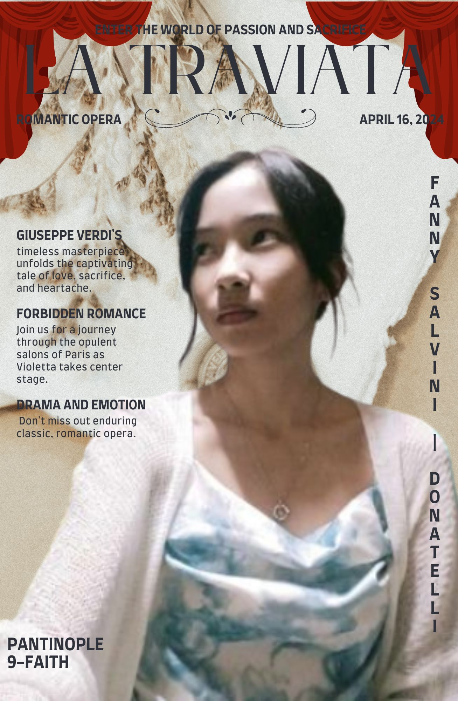
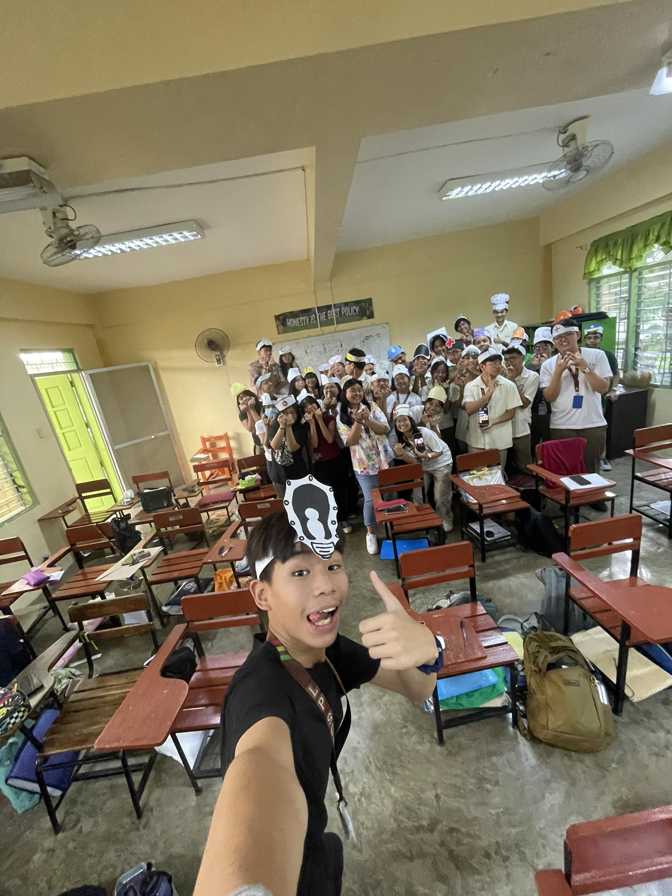

If I were asked, "What was the most memorable time of your life?" I would say the school year 2023-2024.
I met so many great people, had greate experiences, and learnt one way or the other. I grew as a person.
I made mistakes, I made advancements, I made achievements, I made amendments.
I wan't to share this journey with you as a person, not just a student.
CHAPTER 1: "THIS CLASSROOM IS MY FAMILY."
One of the first pictures taken on the first quarter of the school year.
It hasn't even been more than a month yet I've already grown attached to these people.
So many familiar faces yet so much to explore...
CHAPTER 2: "TEACHER'S ARE OUR SECOND PARENT."
Time goes by when you're having fun.
It's so refreshing to be surrounded by those who support you, especially the open-minded kind.
"Happy Teacher's Day!" We chanted, maybe this wasn't so bad.
CHAPTER 3:"WE WORK TOGETHER, AS ONE."
So many memories yet so many more to make, this was one of them.
With such little amount of time left to spare, our entire class became one to finish our task.
The "VPOP" and pageant was one of the many commendable achievements of our class, where it symbolizes unity and faith.
We put aside our differences made big changes.
CHAPTER 4: "SPOTLIGHT ON THE STAGE."
Time was passing by so quick but I don't feel like leaving.
Another mark on this class' history as we all took the stage and performed our hearts out.
With proper planning, management, practice, and especially joy.
We gave life to now what they call the "Variety Show".

CHAPTER 5: "READY? SET... ACTION!"
Just one of the recent performance tasks that was assigned during asynchronous.
"La Traviate" A romantic opera that inspires with it's main actor; Fanny Salvini Donatelli.
Truly an icon who took over the stage and the heart of her audience.

CHAPTER 6: "OUR SECOND MOTHER, OUR GUARDIAN ANGEL."
If angels were to take the form of a human, it would be her.
Ms. Gia, our wonderful advisor and to be honest, the best of the best.
There was never a dull moment around her, her classes were just as fun as her personality.
If there was one thing 9-Faith could agree with it's that we all love our advisor.
CHAPTER 7: "ONE OF THE MANY MORE TO COME."
One of the proudest moments of my life.
Just right after the variety show, ms. Shen announced that our film had reign champion.
I'm eternally grateful for my wonderful groupmates especially my film partner, Donn.
He played the role as my bestfriend and in reality he did become one of my friends.
It's overall just amazing.
CHAPTER 7: "MY ONE TRUE GIFT."
In film an actor played my bestfriend but did you know?
I'm even more grateful for the bestfriends I made in my own story.
...And I would love to thank them, for everthing.
| NAME | MESSAGE |
| Liam Abuan | Bestfriend; My closest friend, thank you for all the wonderful memories and I hope for more and never ending happiness through hardships for the both of us. |
| Yvanne Santos | Bestfriend; Absolutely the kindest. Thank you for sharing your gift to the world. |
| Aishi Dionisio | Bestfriend; If beauty was a person that would be you, I'm so grateful to have you as a friend. |
| Emril Cruz | Friend; If nonchalance was a person that would be you! Nonetheless you're great. |
| Niel Genteroy | Friend; Helpful, also has been my classmate since 7th grade. |
| SJ Bautista | Bestfriend; Very smart and helpful, I hope to see you again the next quarter. |
| Asia Masangkay | Friend; Best president, super calm and collected. |
| Donn Hernandez | Friend; Sometimes I can't understand you but in a good way. |
| Joel Jalimao Jr. | Friend; Congrats, Level rep! |
| Stephen Tato | Friend; Very smart and good social skills but please start passing your activities on time. |
| Jaydinn Magallanes | Friend; Great friend, great person. |
| Yigo Gallardo | Bestfriend; Despite everything, I still consider you close to my person. Thank you for everything! |
CHAPTER 8: "THANK YOU, FOR EVERYTHING."
...Despite everything, every hardship, every bump,
I will never forget these people. They will always hold a special place in my heart.
Thank you 9-Faith for every memory, I will continue your legacy in my memories.
With Love, Pantinople, Wynnie Pearl S.
9-Faith